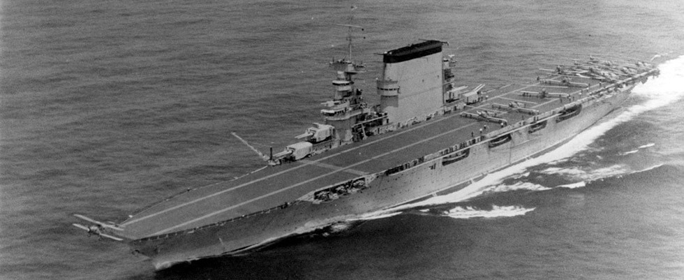
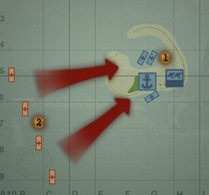
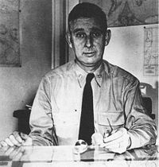
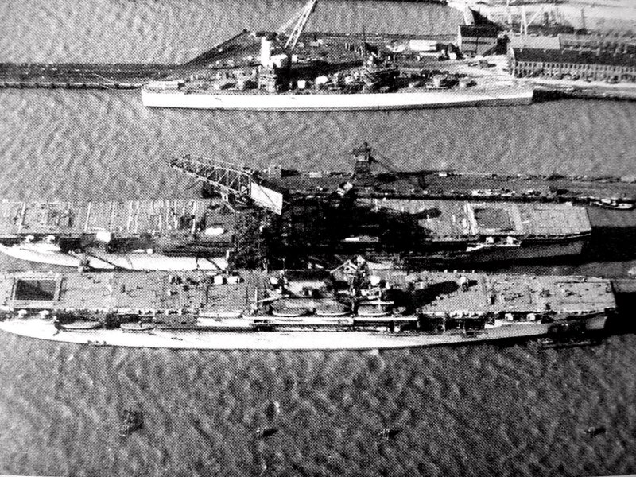
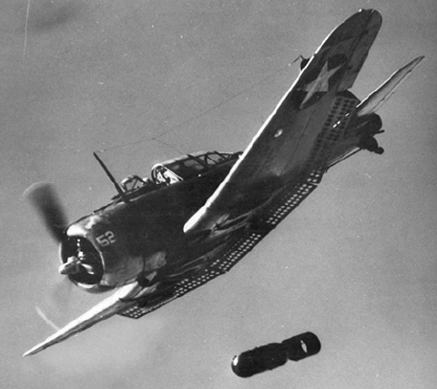

A battle proven to be the turning point of the second world war, and where intelligence overcomes a powerful adversary.
It has been six months since the attack on Pearl Harbor, and so far the empire of Japan has been steamrolling through the pacific. They have captured many resource rich territories including the Wake Islands, Gilbert Islands, the Phillipines, many more and were now threatening the borders of Austrailia. The Japanese had made it this far without heavy resistance, however something was worrying.
The hornet's nest that they kicked back six months ago in December 1942, the United States, were still out there resisting and making war efforts. The attack on Pearl Harbor had done servere damage to the United State's Pacific Navy, taking out many capital ships. However, The Japanese had missed their main target, the aircraft carriers. So that was their main objective now, to destroy the pacific carrier fleet.
Thus, the Midway Operation, under the careful planning of Admiral Isoroku Yamamoto, was created, code-named Operation MI. There were two objectives of the Midway operation, one was to neutralize the Midway base, allowing ground troops to capture it. The second was to lure the American carriers out of their safe base in Pearl Harbor, into a trap of retaking Midway. The Japanese carrier task force also had to keep a lookout for any enemy carriers that may appear while they are attacking the Midway Islands. Four of the IJN's fleet carriers would be dedicated to this task, commonly known as the Kido Butai, or the First Air Fleet. The four carriers were the Akagi, Kaga, Sōryū, and Hiryū. Originally, six carriers were supposed to be part of the operation, however after the Battle of Coral Sea, the Shōkaku was badly damaged, and the Zuikaku's crew had been crippled. This meant that the two carriers ultimately wouldn't be ready for the Midway operation. The entire Midway operation task force would be split into five battlegroups, to disguise their intentions. There was also a task force heading north to take over the Aleutian Islands. The Midway task force consisted of a main body of battleships, the main mobile striking force, a Midway invasion force, an invasion convoy, and an escort for the invasion convoy. Yamamoto's plan was complicated, to attack midway, take it over, baiting the American carriers out of Pearl Harbor, where they would be ambushed by submarines, attacked by bombers from the Japanese carriers, and finally finished off by battleships.
One of the most top secret military organizations in the United States was called Station Hypo, a basement somewhere in Hawaii. This group had partially broken the Japanese naval code (JN25), and were intercepting Japanese messages. A couple weeks before the Midway operation, the Americans got wind that the Japanese were planning a major offensive on a target called A.F., but weren't sure where exactly. Then soon after, Captain Joseph Rochefort, an American crytanalyst and leader of Station Hypo, informed Admiral Chester Nimitz that the likely target was the Island of Midway.
When Nimitz informed the intelligence offices back in Washington, they outright disagreed with Rochefort's suspicions, due to the lack of direct intel. But Rochefort had already set up a trap for the Japanese, signalling the Midway base to send out an unencrypted message saying that their water plant had been broken. And sure enough, the Japanese intercepted the message, and sent a message back to Tokyo saying that A.F. was short on fresh water, proving to Washington.
So Nimitz had confirmed the target of the Japanese, but that didn't make the situation less complicated. Admiral Nimitz now only had two functional aircraft carriers to oppose the Japanese, the Enterprise and the Hornet, after losing the Lexington in the Battle of Coral Sea, with the Yorktown coming back to Pearl Harbor badly damaged. So Nimitz had either the option to completely ignore the Japanese, and then take back Midway once their five building carriers were operational.
In the end, Admiral Nimitz settled on setting a trap for the Japanese instead, with the information already at hand. American code breakers were also able decipher enough messages to determine roughly when and where the Japanese carriers would appear, and that four to five carriers would be in action. While the Yorktown was still undergoind repairs, Nimitz ordered the Enterprise and Hornet to head north of the Midway island, in order to ambush the Japanese when they appeared on the morning of June 4th, 1942. The naval repair yards were also informed that the Yorktown was sailing in three days, for the upcoming Midway operation. The workers quickly patched her up and she was seaworthy in forty-eight hours. All aircraft that could be spared was moved onto the island of Midway, as a fourth unsinkable carrier.
On the morning of June 4th, 1942, the four Japanese carriers launched over 100 aircraft to raid the island of Midway. The damage on the Midway base had been heavy. However, before the Japanese strike had even reached the island of Midway, a Midway search plane spotted the Kido Butai, which meant Midway was able to send it's strike planes before the Japanese arrived. In all, the strikes from Midway based aircraft made no hits at all on the Japanese carriers, due to inexperienced pilots and outdated or improper equipment. The Japanese report back to their commanders that a second strike was needed to fully neutralize Midway.
Vice Admiral Chūichi Nagumo, commander of the Kido Butai, receives his pilot's report that a second attack would be useful to take out Midway. As of now, with no enemy carriers or fleets present, Nagumo ordered the rearmnament of his reserve planes, to strike Midway again. Then about halfway through the rearmnament process, Nagumo receives a report from one of the seven reconnasissance planes launched earlier that morning. The plane reported an enemy surface force a few hundred miles north of Midway. The first thing that Nagumo does is send a message back to the plane asking for ship type. After waiting an anxious several minutes, the pilot reports back that it was just cruisers and destroyers. So in the minds of Nagumo and his staff, they were in no immediate danger. Despite the two ominous clues that cruisers and destroyers were in a odd spot and steering into the wind coming from the south, Nagumo made a decision based on the information at hand and never suspected there to be a carrier (which there were three). Soon after, Nagumo receives another report confirming the presence of at least one American aircraft carrier. So he ultimately had to decide on two things: Either attack the target immediately, or wait to recover the Midway strike, then launch a fully coordinated strike. In the end, Nagumo decided on the safer option, to recover all his planes, then launch an attack, as it offered no risk that was unnecessary. There were also many other factors involved, but as his fleet came under attack from carrier based torpedo bombers, he couldn't launch an attack anyway.
After the morning attacks from Midway, torpedo planes from the American carriers would continue to harrass the Japanese in four groups. The torpedo attacks were a failure as the planes came largely without escorts, and were easily shot down by fighters, making no hits at all. If a torpedo had managed to hit it's mark, then it was squandered, as American torpedoes had never been tested and almost always ran into some sort of problem that made them malfunction. Nine out of ten times, the torpedoes either flew off course, failed to detonate or detonated too early. Some of the torpedo bombers flew too far west, and never found the Japanese anyway. This was known as "The Flight to Nowhere". On top of all the torpedo bomber attacks, lurked another threat, the USS Nautilus, which fired a torpedo at the battle Kirishima, but missed. The destroyer Arashi was detached, and chased the submarine out of the fleet's range. However, these piecemeal attacks did have two positive effects for the Americans, one was that it prevented the Japanese from launching a counterstrike, and another was that the last torpedo squadron pulled all of the Japanese fighters down to less than a thousand feet to engage them.
The American dive bombers arrived soon after the last torpedo squadron attack, and as the fighters had spent all their fuel and ammunition taking down the torpedo bombers, the dive bombers were virtually unopposed. Almost fifty dive bombers came overhead from twenty thousand feet, and from two sides. Wade McClusky was the commander of the southern group of dive bombers, and ordered one quadron to go for the Kaga, and the other for the Akagi. Unfortunately, this message never got to the other pilots, and all the bombers dove onto the Kaga. Had it not been for Lt. Best who recognized the situation and signalled two of his wingmen to follow him, the Akagi would have not been attacked at all. Within just a few minutes, three of the Japanese carriers were hit and erupted with flames. The only carrier left was the Hiryū.
With the Akagi badly damaged, Nagumo was forced to relocate to a nearby cruiser, leaving Rear Admiral Tamon Yamaguchi in command of the remaining aircraft carrier. He wasted no time and instantly ordered a counterstrike. The Hiryū's dive bombers found the Yorktown, and skillfuly landed several armor piercing bombs into the carrier. Following the dive bombing attack came the torpedo bombers, who were looking for an undamaged American carrier to attack. They found the Yorktown, which thanks to effective damage control, was in a functional state again. The torpedo bombers were able to their torpedoes on it, dooming the carrier. It would later be hit again by a Japanese submarine while being salvaged. The pilots reported back to Yamaguchi that they had crippled a second carrier, but unknown to the Japanese, this had been the same carrier. At this point, the Japanese commanders had lost view of the bigger picture; preserving their last aircraft carrier, and continued to fight, despite being outnumbered. A few hours after the disaster that crippled three of the Japanese carriers, Yamamoto was notified of the current situation. He ordered his main body of battleships and those from the Midway invasion force to join up with the Hiryū. He also issued an order for the carriers Jun'yo and Ryujo, which were supposed to participate in taking the Aleutian Islands, to link up with Nagumo's force. But this was pointless, as all forces were several hundred miles away.
After both strikes from the Hiryū returned, the Japanese carrier air forces were almost completely destroyed. The American fleet combined the last of their remaining forces and pilots, for a final strike against the Japanese. The combined air group found the last Japanese carrier, with it's fighters swarming the air. The Japanese fighters were outnumbered this time, There were almost twice as many dive bombers. It also didn't help that pilots on both sides were exhausted at this point. The Dive bombers landed several hits into the front of the carrier, and the Battle of Midway, was over. There were a few other events that happened afterwards, including the sinking of a Japanese cruiser and the USS Yorktown, along with a destroyer.
| Losses | American | Japanese |
|---|---|---|
| Carriers | 1 | 4 |
| Cruisers | 0 | 1 |
| Destroyers | 1 | 0 |
| Aircraft | 145 | 292 |
| Casualties | 307 | around 2500 |